library(haven) # import Stata data and labelslibrary(dplyr) # data manipulationlibrary(sjmisc) # frequency tableslibrary(ggplot2) # graphslibrary(marginaleffects) # predictions and marginal effectslibrary(questionr) # odds ratioslibrary(cleanplots) # graph schemecleanplots_defaults()# Center changes in continuous IVs on each observation's valueoptions(marginaleffects_contrast_direction ="center")anes <-read_dta("https://tdmize.github.io/data/data/cda_anes.dta")# Drop any missing data on the model IVsanes <- anes[complete.cases(anes[c("age", "hhincome", "woman", "lgb", "race4","edyrs", "relimport", "wrongtrack")]), ]# Treat binary/nominal variables as factors using their value labelsanes <- anes |>mutate(woman =as_factor(woman), lgb =as_factor(lgb), race4 =as_factor(race4),relimport =as_factor(relimport), wrongtrack =as_factor(wrongtrack),college =as_factor(college)) |>droplevels()lpm1 <-lm(vote_trump ~ age + hhincome + woman + lgb + race4 + edyrs + relimport + wrongtrack, data = anes)# Make prediction for highly educated black womanavg_predictions(lpm1, newdata =datagrid(woman ="Woman", race4 ="Black", edyrs =20,relimport ="5. Not important at all", wrongtrack ="Wrong track",grid_type ="counterfactual"))
Estimate Std. Error z Pr(>|z|) S 2.5 % 97.5 %
-0.301 0.0216 -14 <0.001 145.1 -0.344 -0.259
Type: response
logit1 <-glm(vote_trump ~ age + hhincome + woman + lgb + race4 + edyrs + relimport + wrongtrack, family =binomial(link ="logit"), data = anes)# Make prediction for highly educated black womanavg_predictions(logit1, newdata =datagrid(woman ="Woman", race4 ="Black", edyrs =20,relimport ="5. Not important at all", wrongtrack ="Wrong track",grid_type ="counterfactual"))
Estimate Std. Error z Pr(>|z|) S 2.5 % 97.5 %
0.00355 0.000803 4.42 <0.001 16.6 0.00197 0.00512
Type: response
The LPM produces a non-sensical -.30 predicted probability that a highly educated black woman would vote for Trump
A logit model produces a reasonable 0.004 pr. prob – indicating the woman is highly unlikely to vote for Trump
* Add distribution of feel_trump (IV) to plotquilogit vote_trump age hhincome i.woman i.lgb i.race4 /// edyrs i.relimport i.wrongtrack feel_trumpqui margins, at(feel_trump=(0(5)100))marginsplot, /// xlab(0(10)100) ///ytitle("Pr(Voting for Trump)") /// recastci(rline) ciopt(lpat(dash) color(*.5)) /// plotopt(msym(none) lwid(medthick)) ///title("[3.5.b] Predicted probability of voting for Trump based on feelings toward Trump") ///subtitle("Kernel density plot show distribution of feeling thermometer", size(small)) ///addplot(kdensity feel_trump, /// ylab(-.3 " " 0(.2)1) yaxis(2) yscale(range(0 0.1) off alt axis(2))) ///legend(off)
Variables that uniquely identify margins: feel_trump
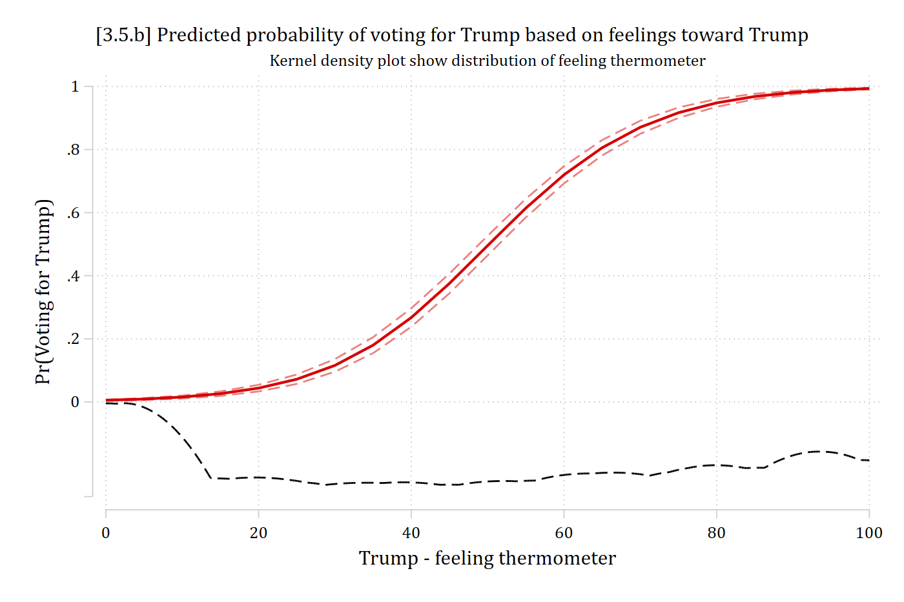
ggplot(logit_tr, aes(x = feel_trump, y = estimate)) +geom_line(linewidth =1) +geom_line(aes(y = conf.low), linetype ="dashed", color ="gray60") +geom_line(aes(y = conf.high), linetype ="dashed", color ="gray60") +# kernel density of feel_trump, scaled to sit below the predictionsgeom_density(data = anes, aes(x = feel_trump, y =after_stat(-0.3+0.25* density /max(density))),inherit.aes =FALSE, color ="gray40") +scale_x_continuous(breaks =seq(0, 100, 10)) +scale_y_continuous(breaks =seq(0, 1, 0.2)) +labs(title ="[3.5.b] Predicted probability of voting for Trump based on feelings toward Trump",subtitle ="Kernel density plot show distribution of feeling thermometer",x ="Trump - feeling thermometer", y ="Pr(Voting for Trump)")
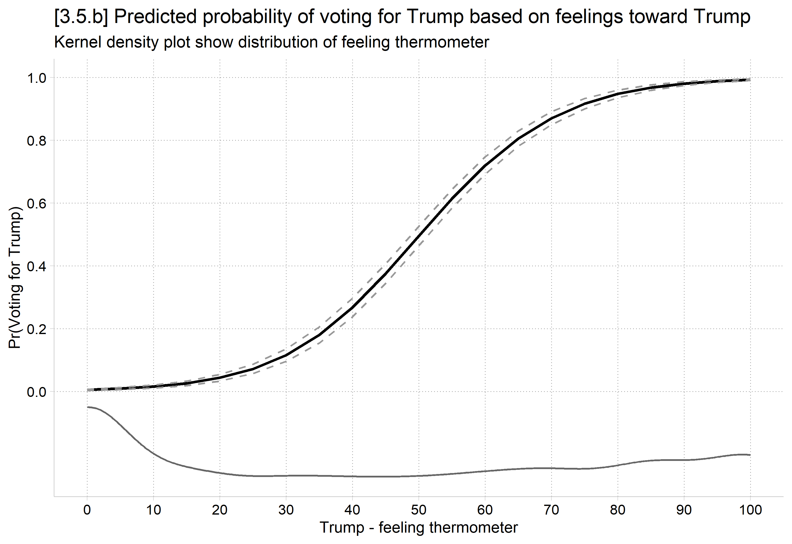
We can compare +SD effects across the LPM and logit
// Compare LPM to logitquiregress vote_trump c.feel_trump age hhincome i.woman i.lgb i.race4 /// i.college i.relimport i.wrongtrackeststore lpmquilogit vote_trump c.feel_trump age hhincome i.woman i.lgb i.race4 /// i.college i.relimport i.wrongtrackeststore logit_m* Compare average effects across modelsmecompare feel_trump, models(lpm logit_m) amount(sd)
mecompare uses vce(robust) for all models. Standard errors from mecompare will d
> iffer from the specified model(s) because vce(robust) was not used on at least
> one of the models specified in the models( ) option. We strongly recommend re
> fitting the first (regress) and second (logit) models with vce(robust). See vc
> e_option for details on vce(robust).
Predicting: Linear prediction (lpm), Pr(vote_trump) (logit_m)
Marginal effects and cross-model differences (N_lpm=6695) (N_logit_m=6695)
| ME # Estimate Robust SE P>|z|
---------------------------------+---------------------------------------
feel trump + SD (centered) |
lpm | 1 0.432 0.004 0.000
logit m | 2 0.166 0.004 0.000
Difference | 3 0.266 0.004 0.000
# Compare LPM to logit (keep the observations used in both models)anes_m <- anes[complete.cases(anes[c("vote_trump", "feel_trump", "college")]), ]lpm <-lm(vote_trump ~ feel_trump + age + hhincome + woman + lgb + race4 + college + relimport + wrongtrack, data = anes_m)logit_m <-glm(vote_trump ~ feel_trump + age + hhincome + woman + lgb + race4 + college + relimport + wrongtrack, family =binomial(link ="logit"), data = anes_m)# Compare average effects across modelssd_feel <-sd(anes_m$feel_trump)avg_comparisons(lpm, variables =list(feel_trump = sd_feel))
* Compare effects where most data is: endsof feeling thermometermecompare feel_trump, models(lpm logit_m) start(feel_trump=0) amount(10) uncenter
mecompare uses vce(robust) for all models. Standard errors from mecompare will d
> iffer from the specified model(s) because vce(robust) was not used on at least
> one of the models specified in the models( ) option. We strongly recommend re
> fitting the first (regress) and second (logit) models with vce(robust). See vc
> e_option for details on vce(robust).
Predicting: Linear prediction (lpm), Pr(vote_trump) (logit_m)
Marginal effects and cross-model differences (N_lpm=6695) (N_logit_m=6695)
| ME # Estimate Robust SE P>|z|
---------------------------------+---------------------------------------
feel trump + 10 (uncentered) |
lpm | 1 0.105 0.001 0.000
logit m | 2 0.010 0.001 0.000
Difference | 3 0.095 0.002 0.000
# Compare effects where most data is: ends of feeling thermometeravg_comparisons(lpm, variables =list(feel_trump =c(0, 10)))
It is important to ensure even control variables are specified and modeled correctly
The estimates for your focal IV are correct only if the rest of the model is correctly specified
Here, even a binary IV (which LPM usually handles well), shows a wonky false positive in the LPM, because the feeling thermometer variable in the model is so off
mecompare uses vce(robust) for all models. Standard errors from mecompare will d
> iffer from the specified model(s) because vce(robust) was not used on at least
> one of the models specified in the models( ) option. We strongly recommend re
> fitting the first (regress) and second (logit) models with vce(robust). See vc
> e_option for details on vce(robust).
Predicting: Linear prediction (lpm), Pr(vote_trump) (logit_m)
Marginal effects and cross-model differences (N_lpm=6695) (N_logit_m=6695)
| ME # Estimate Robust SE P>|z|
---------------------------------+---------------------------------------
wrongtrack |
Wrong track - Right trac |
lpm | 1 -0.030 0.010 0.002
logit m | 2 -0.008 0.006 0.193
Difference | 3 -0.022 0.005 0.000
avg_comparisons(lpm, variables ="wrongtrack")
Estimate Std. Error z Pr(>|z|) S 2.5 % 97.5 %
-0.0298 0.00746 -4 <0.001 14.0 -0.0445 -0.0152
Term: wrongtrack
Type: response
Comparison: Wrong track - Right track
avg_comparisons(logit_m, variables ="wrongtrack")
Estimate Std. Error z Pr(>|z|) S 2.5 % 97.5 %
-0.00798 0.00556 -1.43 0.152 2.7 -0.0189 0.00293
Term: wrongtrack
Type: response
Comparison: Wrong track - Right track
The LPM’s unrealistic functional form can also often impose false interaction effects (Rohrer and Arslan 2021)
* Show incorrect interactions LPM can enforcequilogit vote_trump c.feel_trump##i.wrongtrack age hhincome /// i.woman i.lgb i.race4 i.college i.relimporteststore logXmodquiregress vote_trump c.feel_trump##i.wrongtrack age hhincome /// i.woman i.lgb i.race4 i.college i.relimporteststore lpmXmod* Calculate AMEs of feeling thermometer, across categories of wrong trackmecompare feel_trump, by(wrongtrack) amount(sd) models(logXmod lpmXmod)
mecompare uses vce(robust) for all models. Standard errors from mecompare will d
> iffer from the specified model(s) because vce(robust) was not used on at least
> one of the models specified in the models( ) option. We strongly recommend re
> fitting the first (logit) and second (regress) models with vce(robust). See vc
> e_option for details on vce(robust).
Predicting: Pr(vote_trump) (logXmod), Linear prediction (lpmXmod)
Marginal effects and cross-model differences (N_logXmod=6695) (N_lpmXmod=6695)
| ME # Estimate Robust SE P>|z|
---------------------------------+---------------------------------------
feel trump + SD (centered) |
logXmod Right track | 1 0.190 0.010 0.000
logXmod Wrong track | 2 0.167 0.003 0.000
lpmXmod Right track | 3 0.335 0.017 0.000
lpmXmod Wrong track | 4 0.444 0.004 0.000
Difference Right track | 5 -0.145 0.026 0.000
Difference Wrong track | 6 -0.277 0.005 0.000
Smaller the slope, greater change in x required for a given change in Pr(y)
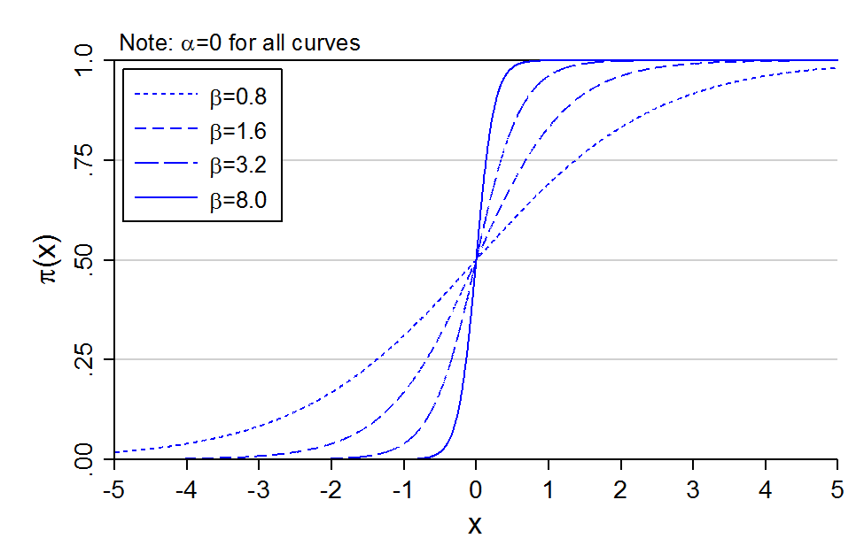
Changing β changes the effect of x
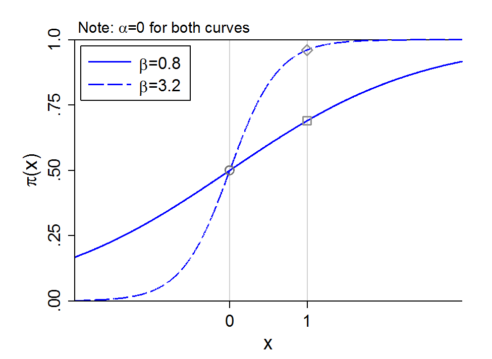
Changing the intercept
Smaller intercept, curve moves right
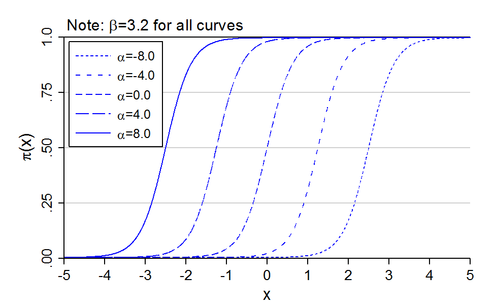
Changing α changes the effect of x
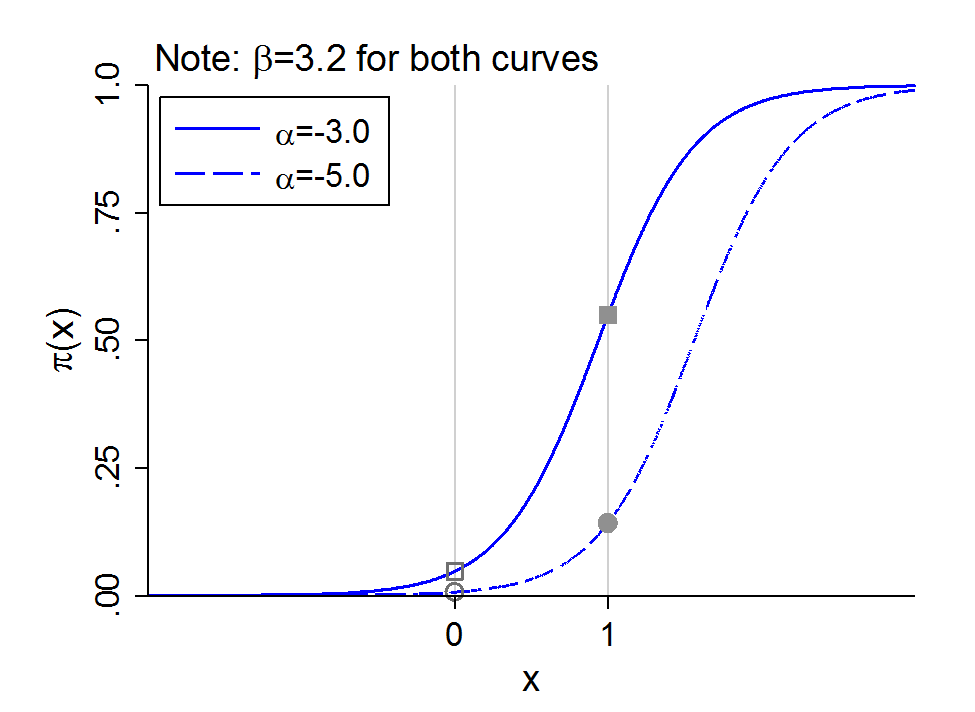
NOTE: This is why binary models are “inherently interactive.” Imagine the intercept shift (α) was due to a binary variable for college completion (=1). The effect of other variables (e.g., x could be age) are now automatically different for each group
Inherent interactions for continuous IVs
The same phenomenon of inherent interactions occurs for two continuous IVs
Consider two continuous IVs: x1 and x2
The intercept effectively absorbs the level of x2 causing an intercept shift
Does the empirical relationship need to be S-shaped?
Does anyone in the sample need to have a probability near 0 or 1?
Can the relationship be relatively linear?
Can changes in x’s change the probability from 0 to 1 in the sample?
Where is your observed data located?
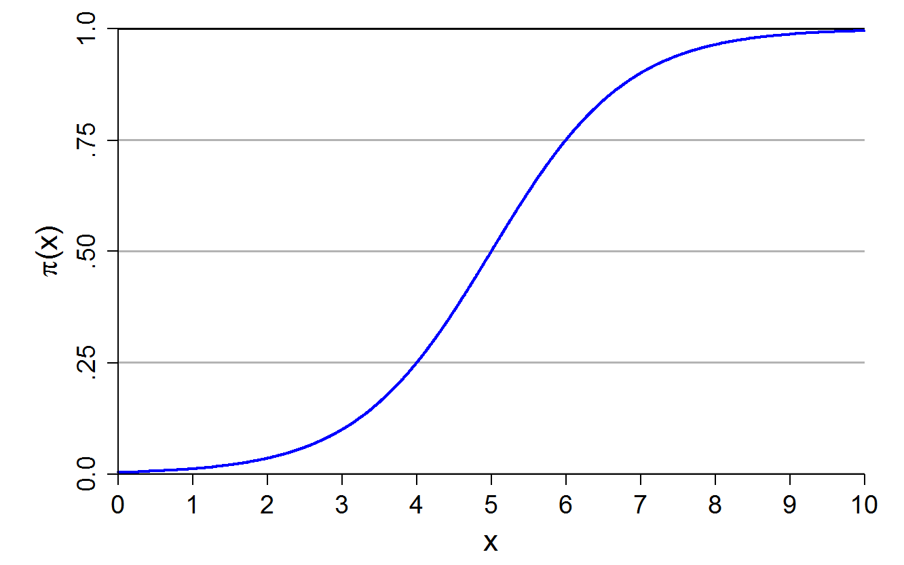
If only low or high probabilities are observed, very nonlinear
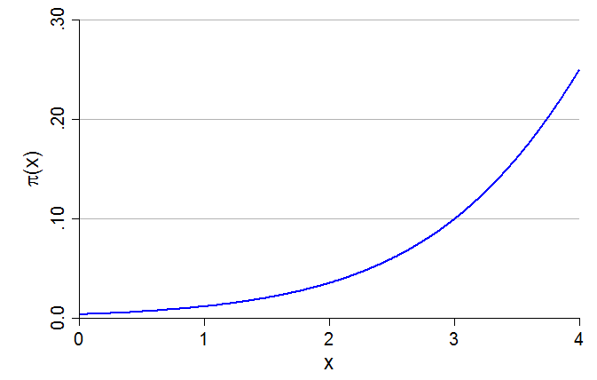
Change is mostly linear in middle of probability curve
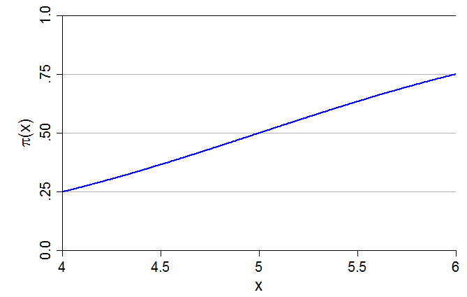
Both of these are examples of just part of the logit probability curve being observed in the data (e.g., graph on left could be what you would observe for a rare outcome [i.e., few 1s on the DV]). Do you think the linear probability model (LPM) would predict similar probabilities? For one or the other? Both? Why?
Negative relations are possible
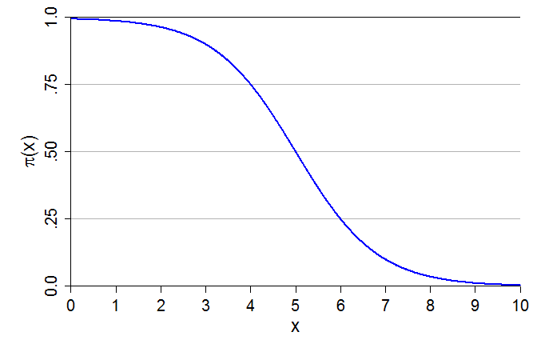
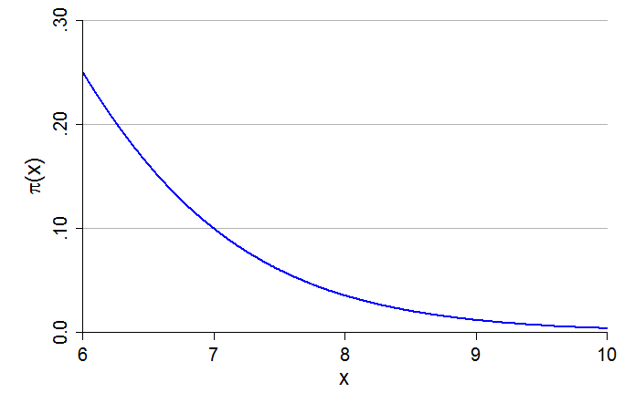
And so on.
Note that these nonlinearities exist without any polynomials in the model for independent variables (e.g., x could be age—there is no x2 in our model)
See Appendix 3E for the effect of adding polynomial specifications of the IVs
GSS example: marijuana legalization
Let’s revisit our GSS example for support for legalizing marijuana use, but keep all available years (1975 to 2022)
Do you think the use of marijuana should be made legal or not?
lab def glab 0"not be legal" 1 "should be legal"lab val grass glabfre grass
grass -- should marijuana be made legal
-----------------------------------------------------------------------
| Freq. Percent Valid Cum.
--------------------------+--------------------------------------------
Valid 0 not be legal | 21358 61.97 61.97 61.97
1 should be legal | 13108 38.03 38.03 100.00
Total | 34466 100.00 100.00
-----------------------------------------------------------------------
* Create year since 1975 variablegen year1975 = year - 1975lab var year1975 "years since 1975"
gss <-read_dta("https://tdmize.github.io/data/data/cda_gss22.dta")# Drop any missing data on model varsgss <- gss[complete.cases(gss[c("grass", "age", "conserv", "faminc", "college","woman", "race4")]), ]frq(gss, grass)
should marijuana be made legal (grass) <numeric>
# total N=34466 valid N=34466 mean=0.38 sd=0.49
Value | Label | N | Raw % | Valid % | Cum. %
----------------------------------------------------------
0 | Not be legal | 21358 | 61.97 | 61.97 | 61.97
1 | Should be legal | 13108 | 38.03 | 38.03 | 100.00
<NA> | <NA> | 0 | 0.00 | <NA> | <NA>
# Create year since 1975 variablegss <- gss |>mutate(year1975 =as.numeric(year) -1975)
histyearif grass <= ., width(2) percent fcol(none) ///title("[3.6.a] Percent of observations per year of the GSS")
(bin=24, start=1975, width=2)
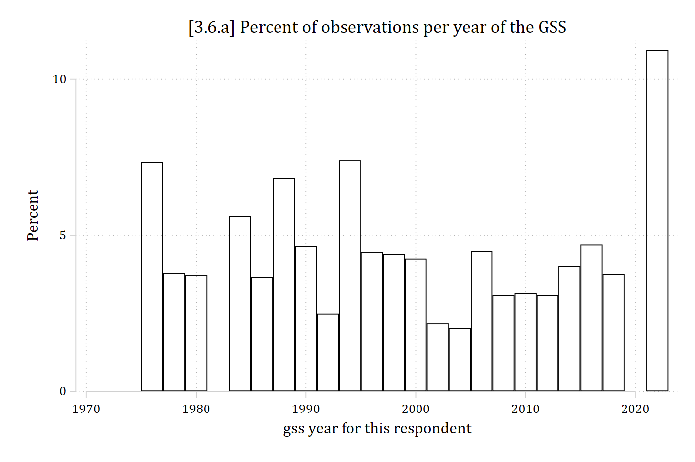
ggplot(gss, aes(x =as.numeric(year))) +geom_histogram(aes(y =after_stat(100* count /sum(count))),binwidth =2, boundary =1975, closed ="left", fill =NA, color ="black") +labs(title ="[3.6.a] Percent of observations per year of the GSS",x ="gss year for this respondent", y ="Percent")
Each additional year of age decreases the odds of supporting marijuana legalization by a factor of 0.98
Conservatives’ odds of supporting legalized marijuana are 0.43 times lower than non-conservatives
Are these large effects or small effects?
Do you have a sense of age’s effect size?
0.43 is a large effect size in the odds metric (odds reduce more than half)
Can you guess how different the two groups are in terms of percentage points?
The year variable* shows significant linear and quadratic coefficients, but it is all but impossible to interpret its effect given the model is already nonlinear
To know substantive effect size, and to understand nonlinearities, must interpret in terms of predictions
*Variables with only very large values like year can cause problems. Solution: create a years since first observed year variable, here year1975 = year - 1975